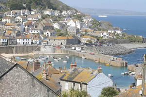
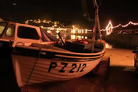

Mousehole and it's picturesque Harbour
Mousehole (pronounced Mousal; Cornish: Porthynys) is a village and fishing port near Newlyn, reputed to have one of the most beautiful harbours in the country. Mousehole is currently within the parish boundaries of the town of Penzance. Offshore from Mousehole is an islet called St Clement's Isle.
Mousehole, along with Marazion, was until the 16th century one of the principal ports of Mount's Bay. Before its decline as a major commercial centre, Mousehole also had a number of fairs and markets, including the charter for a market on Tuesdays, with a fair for three days at the festival of St Barnabas, granted to Henry de Tyes in 1292. Mousehole, like many communities in Mount's Bay, fell within the authority of the Manor of Alverton; all early charters, fairs etc. associated with Mousehole are associated with this manorial estate.
Mousehole, like the most of Mount's Bay, was destroyed in the 1595 raid on Mount's Bay by Spanish invaders, the only surviving building being the 'Keigwin Arms', a local pub (now a private residence). Dolly Pentreath, who is often accorded the status of last native speaker of the Cornish language, is often listed as coming from Mousehole. There is a small memorial to her in Mousehole itself, although a larger one exists in the nearby parish of Paul, which is historically the mother church and mother community of Mousehole.
Modern Mousehole
A traumatic and defining event in the recent history of the village was the Penlee lifeboat disaster of the 19 December 1981, in which the lifeboat and its entire crew of eight, all based in Mousehole, were lost during an attempted rescue in hurricane-force winds.
Since then, Mousehole has seen an increase in second home ownership and a corresponding decline in resident population. The village’s historic harbour side hotel, The Lobster Pot – in the 1930’s a guest house run by Wyn Henderson, friend to poet Dylan Thomas - was recently demolished, giving way to a block of luxury flats. It was in the Lobster Pot in 1938 that Dylan Thomas spent his honeymoon, after marrying Caitlin MacNamara at Penzance register office.
Mousehole hosts a vibrant variety of festivals and community activities. It is known for its Christmas illuminations, created each year to raise money for charity. Since 1981, every December 19 the lights have been turned off in memory of the victims of the lifeboat disaster. Tom Bawcock's Eve is a unique celebration held on December 23 each year to celebrate the ending of a famine in the 16th century by local resident Tom Bawcock. This festival is the inspiration behind the book The Mousehole Cat by Antonia Barber.
images - N p holmes, Bob Jones